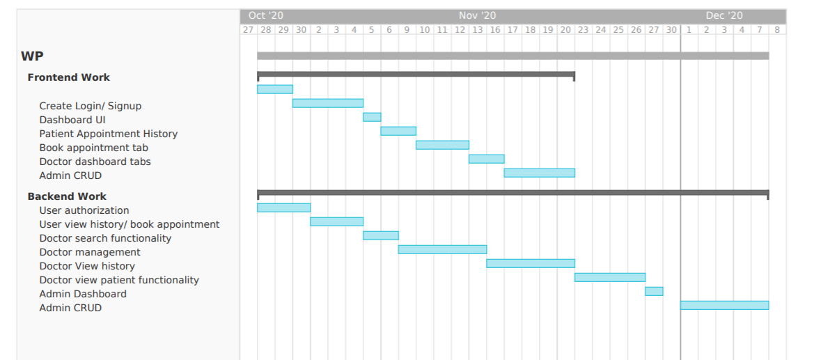

It is a web based application for hospitals in order to manage doctors and patients, through which various functionalities can be performed by the users. We intend to build this project using Bootstrap, PHP and MYSQL Database. This system consist of three modules:
- Admin Module
- Doctor Module
- Patient Module
Admin Module
- Admin can view the Patients, Doctors, Appointments and all new queries.
- Admin can add and update Doctors
- View user's data and delete the irrelevant user
- Admin can search any patient with the help of patient name and mobile number.
- Admin can check login and logout time of both doctors and patients.
Patient Module
- Patient can view their profile
- Patient can book their appointments
- Patient can book their appointments
- Patient can view their appointment history
Doctor Module
- Doctors can view their own appointments and history
- Doctors can view patient's appointment history
- Doctors can search patient by name or mobile number
- Doctors can manage patients (add or update)
Estimated Project Timeline
